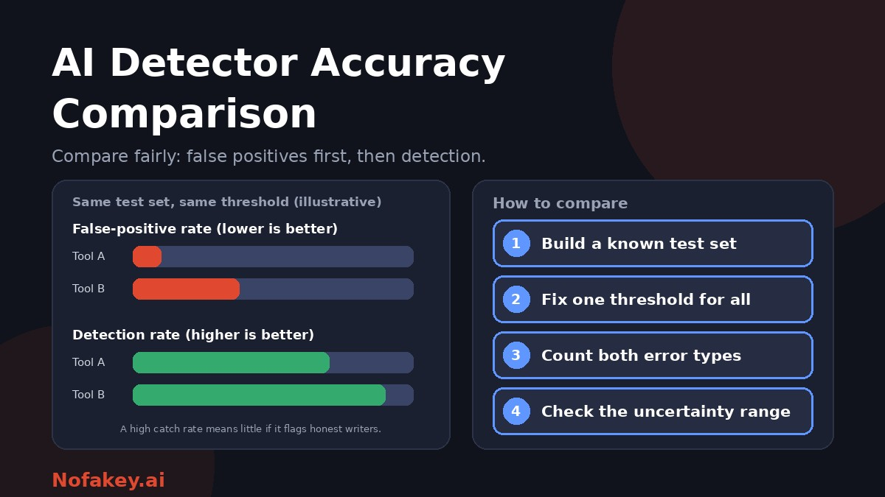

Search for an AI detector accuracy comparison and you will find tables ranking tools from 99% down to 52%, often with the same tool at both ends. Vendors claim near-perfect scores. Independent tests report much lower and more varied results. Reviews sometimes carry affiliate links. If you have to choose a detector, or decide whether to trust one, a ranking is the wrong thing to look for. This guide explains why the numbers disagree, which number matters most, and how to compare detectors yourself, with a calculator you can use right here.
Why accuracy comparisons disagree
| What differs | Why it changes the number |
|---|---|
| The test texts | Raw AI output is easier to catch than edited, paraphrased or "humanized" text. Essays, abstracts, emails and short answers behave differently |
| The human texts | Formal academic writing and non-native English writing are flagged more often than casual native writing |
| The threshold | A detector tuned to flag aggressively catches more AI but also accuses more honest writers. The same tool can look good or bad depending on the cut-off |
| The metric | Overall accuracy mixes two error types. Detection at a fixed false-positive rate is a very different measure |
| The AI models used | A detector may handle one generator well and another poorly |
| The tool version and date | Detectors and AI models both change quickly, so a result from last year may not apply |
| Who ran the test | Vendor-run tests tend to look better than independent ones, and some roundups earn money from the tools they rank |
| The share of AI in the test set | If most texts are human, a tool that flags almost nothing can still score high accuracy |
This is why we do not publish a league table here. Published figures conflict too widely, change too fast, and often cannot be checked. Instead, here is how to judge the numbers you see and produce your own.
Why the false-positive rate matters most
A false positive is a human-written text flagged as AI. It is the error that harms people: a student accused, a freelancer unpaid, a candidate rejected. A detection rate (how much AI text is caught) matters too, but a high catch rate means little if many honest writers are caught with it.
Here is why, with simple arithmetic. These figures are illustrations, not measurements of any real tool. Suppose a detector catches 90% of AI texts. How many flags are wrong, depending on its false-positive rate and how much of the work is actually AI?
| False-positive rate | If 10 in 100 texts are AI | If 2 in 100 texts are AI |
|---|---|---|
| 0.1% | About 1 in 100 flags is wrong | About 5 in 100 flags are wrong |
| 1% | About 9 in 100 flags are wrong | About 35 in 100 flags are wrong |
| 5% | About 33 in 100 flags are wrong | About 73 in 100 flags are wrong |
When AI use is less common, even a small false-positive rate means a large share of flags point at honest writers. So ask for the false-positive rate first, and ask it at a stated threshold.
How to read someone else's comparison table
- Who ran the test? An independent researcher, a vendor, or a site that earns commission on sign-ups?
- What was the test set? How many texts, what kinds, how were human and AI texts chosen, and were any edited or paraphrased?
- Was non-native or formal writing included? If not, the false-positive rate may be understated for those writers.
- What threshold was used? Does the table report the false-positive rate at that threshold?
- Which AI models produced the text? And how recent are they?
- How big was the sample? A few dozen texts cannot support precise percentages.
- When was it run and on which version? Old results age fast.
- Can the results be reproduced? Look for published methods and data.
Be especially sceptical of single figures like "99% accurate" without these details. See are AI detectors accurate? for the broader picture, and AI detector false positives for non-native English writers for a group that is often under-tested.
Build your own test set
You do not need a laboratory. A small, well-built set of samples tells you more about how a detector will behave on your kind of text than any published table.
- Collect human texts you know are human. Use your own earlier writing, or documents written before generative AI tools were widely used, with the authors' permission where needed. Include different styles: formal, casual, short and long.
- Include the writers you worry about. Add samples from non-native English writers, with consent, and technical or formulaic text.
- Create AI texts yourself with more than one tool, on topics similar to the human texts, and note which tool made each.
- Add the tricky cases: AI text that you have edited, paraphrased or mixed with human writing.
- Keep the sets realistic and matched in length, since very short texts behave differently.
- Run every detector on the same texts at the same threshold, and record each result before you look at the next one.
- Count both error types: human texts flagged as AI, and AI texts correctly flagged.
- Repeat later, because tools and AI models change.
For more on running a calibration test in a team or agency, see bulk AI content checker for agencies.
Detector comparison calculator
Enter your test results for up to three detectors. The calculator works out each tool's false-positive rate and detection rate, shows a rough range that reflects how small your sample is, and estimates how many flags would be wrong at the share of AI-written submissions you expect. Everything runs in your browser. Nothing you type is sent anywhere.
How to read the results
- False-positive rate: the share of human texts wrongly flagged. Lower is better, and this is the number to check first.
- Detection rate: the share of AI texts caught. Higher is better, but only alongside a low false-positive rate.
- The range: a rough 95% interval. With few texts the range is wide, so two tools that look different may not really be different.
- Wrong flags per 100: an estimate at the AI share you entered, which shows what a flag would mean in practice.
Questions to ask any vendor
- What is your false-positive rate, at what threshold, and on what test set?
- Who evaluated it, and can I see the methods and data?
- What happens to your results on edited, paraphrased or mixed text?
- Have you published results for non-native English and formal writing?
- Which AI models and languages do you cover, and how often do you update?
- What happens to the text I submit: stored, shared, used for training?
- Do you advise against using a score as the sole basis for decisions?
A vendor that answers these plainly is telling you something. One that only repeats a headline percentage is telling you something else.
Using detectors responsibly once you have compared them
- Treat the result as a clue. It decides where to look, not what to conclude.
- Consider using more than one tool, and treat disagreement as a reason for caution, not an invitation to pick the answer you prefer.
- Never act on a score alone. Look at drafts, sources, earlier work and talk to the writer.
- Protect privacy. Check what a tool does with submitted text before uploading.
- Re-test periodically and keep a record of what you found.
For institutions, see AI detector policy for universities. For publishing teams, see AI detectors for publishers and editors. For client work, see AI writing detectors for freelancers and clients. For image tools, see free AI image detector online. If a link or message that came with a text looks suspicious, paste it into our free checker for a quick first read. It is not a text detector.
Conclusion
An AI detector accuracy comparison is only as good as its test set, threshold and honesty about who ran it. Published numbers conflict because they measure different things, so do not rely on a ranking. Look at the false-positive rate first, understand what a flag means at your own base rate, test shortlisted tools on your own known samples, and treat every score as a clue. Find more guides on the Nofakey.ai blog.
Frequently asked questions
Which AI detector is the most accurate?
There is no reliable single answer. Published figures come from different test sets, thresholds and dates, and vendor claims are often much higher than independent results. Ask for the false-positive rate, the test set and who evaluated it, then test on your own samples.
Why do AI detector accuracy numbers disagree so much?
Tests differ in which texts they include, how much the AI text was edited, which threshold counts as AI, the AI models used, the tool version and whether results are reported as overall accuracy or detection at a fixed false-positive rate.
Why is the false-positive rate more important than overall accuracy?
Because a false positive wrongly accuses an honest writer. Overall accuracy mixes both error types, and when few texts are AI-written, even a small false-positive rate can mean a large share of flags are wrong.
How many texts do I need to test a detector?
More is better. With small samples, the range of plausible error rates is wide, so differences between tools may just be chance. Use the calculator on this page to see the range for your own numbers.
Should I use more than one detector?
If you use detectors at all, comparing results can reveal disagreement and reduce the chance of acting on one tool’s mistake. Treat all results as clues and never as proof.
Got a suspicious link, offer or message to check?
Run it through the checker